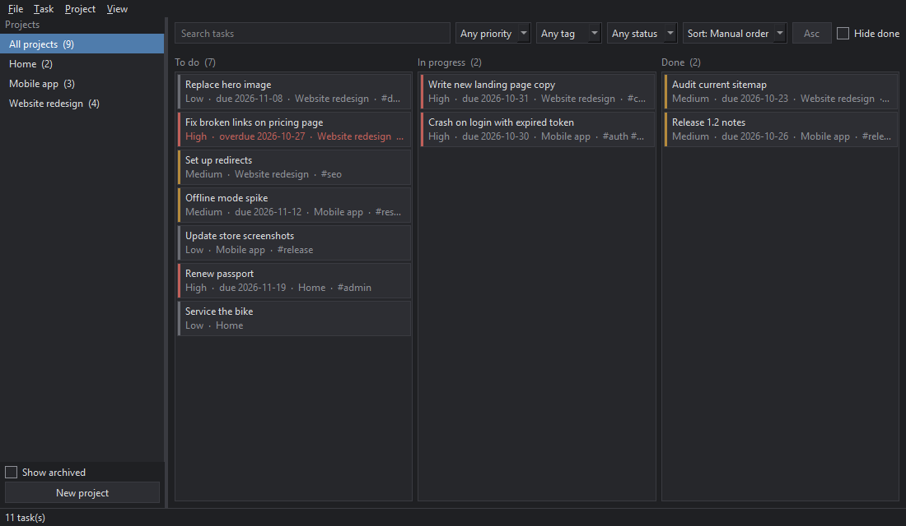
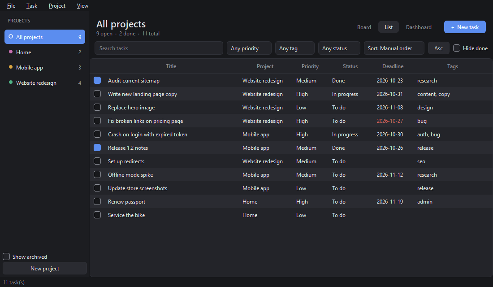
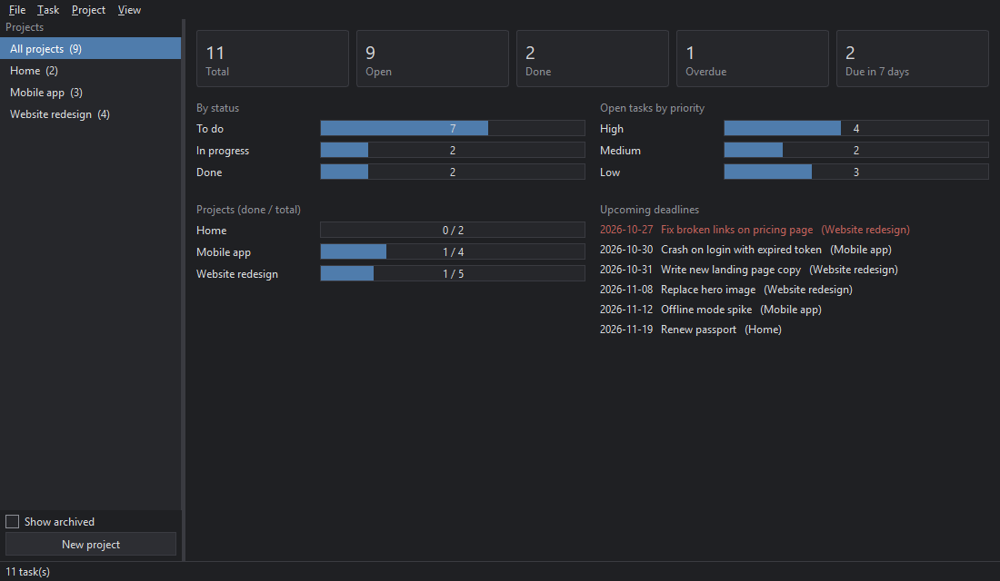

Daybook
A simple desktop task and project manager. Your tasks stay in a local file; nothing is sent anywhere.
Download for Windows Source on GitHubUnzip and run Daybook.exe. The app is unsigned, so Windows SmartScreen may warn you: choose "More info", then "Run anyway".

What it does
- Projects with archive; tasks with priority, deadline, tags and description.
- Kanban board with drag-and-drop, plus list and dashboard views.
- Search, sort and filter by project, priority, status and tag.
- JSON and CSV import/export, database backup and restore.
- Dark, Graphite and Light themes; rebindable keyboard shortcuts.

